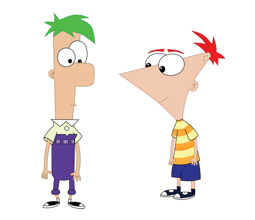

Phineas and Ferb is an American animated musical comedy television series produced by Disney Television Animation. Originally broadcast as a one-episode preview on August 17, 2007, and again previewed on September 28, 2007, the series officially premiered on February 1, 2008, on Disney Channel, running until June 12, 2015. The program follows Phineas Flynn and his stepbrother Ferb Fletcher[2] on summer vacation. Every day, the boys embark on some grand new project; these are usually unrealistic given the protagonists' ages, which annoys their controlling sister, Candace, who frequently tries to reveal their shenanigans to her and Phineas's mother
If you want to watch 'Phineas and Ferb' on Disney Plus
Click Here
Here is a Youtube Video of Phineas and Ferb's Theme song.
